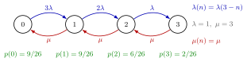

Finite Calling Population¶
Definition¶
A queue with a finite calling population draws its jobs from a fixed set of sources. The standard example is a repair shop: a factory has machines and mechanics. A machine is either working or failed; a failed machine waits at the repair department until a mechanic is free and is then repaired. Each working machine fails at rate , independently of the others, and a repair takes an time.
Let be the number of machines in repair (waiting or being repaired). When , there are machines running, so in the state-dependent description
Every failed machine enters the repair shop, so , and the state space is .
Interpretation¶
The input is generated by the population itself: every machine that is in repair is one machine less that can fail. Hence the more crowded the repair shop, the slower new jobs arrive. As , the model is stable for all , and .

The diagram is Example 1 with , , and . The failure rates , , to the right fall as more machines are down; the repair rate to the left is that of the single mechanic. Equating the flows across each cut gives the level-crossing equation , whose solution is printed under the states.
The rate holds because the first failure among running machines is the minimum of independent exponentials. Without exponential times, the state would not determine the rates and the birth-death recursion would not apply.
Because depends on , failures do not form a Poisson process and PASTA does not hold: a failing machine tends to find a shorter repair queue than the time average, since failures are rare when many machines are down. When the machines alternate independently between working and repair, and has a binomial distribution. When is large and each source rarely calls, hardly changes with , which is why a call centre with many potential callers is modelled with Poisson arrivals.
A common slip is to use , the failure rate of a fully working factory, in Little's law; the actual failure rate is the smaller .
Key Results¶
- Stationary distribution. By the level-crossing recursion, for , and follows from . The sum is finite, so no stability condition is needed.
- As many mechanics as machines (, Exercise 5.1.7). With , for , so and . The notes add that this case is the Ehrenfest model of diffusion.
- Failure rate. By (4.5.2), the long-run rate at which machines fail is . Little's law applied to the mechanics gives , with .
- Time out of action. By Little's law, the mean time a machine spends in repair is , and its mean wait for a mechanic is .
- What a failing machine sees. By Theorem 4.5.1, , which in general differs from ; in particular .
Examples¶
1. Three machines, one mechanic. Take , , each machine failing on average once per week () and a mean repair time of week (). The recursion gives
The weights sum to , so . Then and failures per week. Check: the mechanic is busy a fraction of the time and repairs at rate 3, which gives as well. A failed machine is out of action for weeks on average.
2. Failures do not see time averages. In Example 1, gives . A failing machine finds the mechanic free with probability , although the mechanic is free only a fraction of the time. As a check on the waiting time, , so week, which equals .
3. A mechanic per machine. With the same machines but , the binomial formula with gives , so and . Now and : no machine ever waits. Two extra mechanics lower the mean number of machines down from to .
Prerequisites¶
- Birth-Death Queue
- Level-Crossing Equation
- State-Dependent Arrival Rate
- Minimum of Independent Exponentials
- Binomial Distribution
Related Concepts¶
- M/M/c Queue
- M/M/Infinity Queue
- Balking
- Poisson Arrivals See Time Averages
- Little's Law
- Erlang B Model
- Server Failure
Sources¶
- Stochastic Operations Research · Week 4
- N. D. van Foreest, Sample Path Analysis and Simulation of Stochastic Systems, Section 5.1
Aliases: finite-source queue, finite population queue, machine-repair model, machine interference model, repairman model, finite-source model Keywords: \lambda(n)=\lambda(N-n), \mu(n)=\mu\min{n,c}, N machines and c mechanics, repair system, spare parts, Ehrenfest model, binomial stationary distribution Symbols: lambda, mu, pi, product, rho, sum
Last updated: 29 October 2026 20:42
Finite Calling PopulationBirth-Death QueueLevel-Crossing EquationState-Dependent Arrival RateMinimum of Independent ExponentialsBinomial DistributionM/M/c QueueM/M/Infinity QueueBalkingPoisson Arrivals See Time AveragesLittle's LawErlang B ModelServer Failure